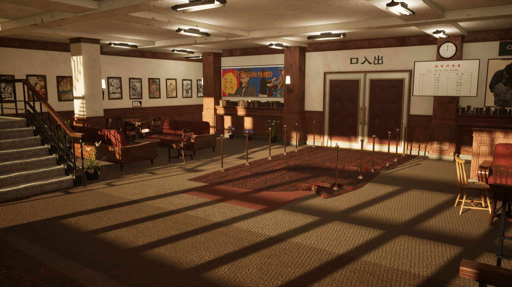
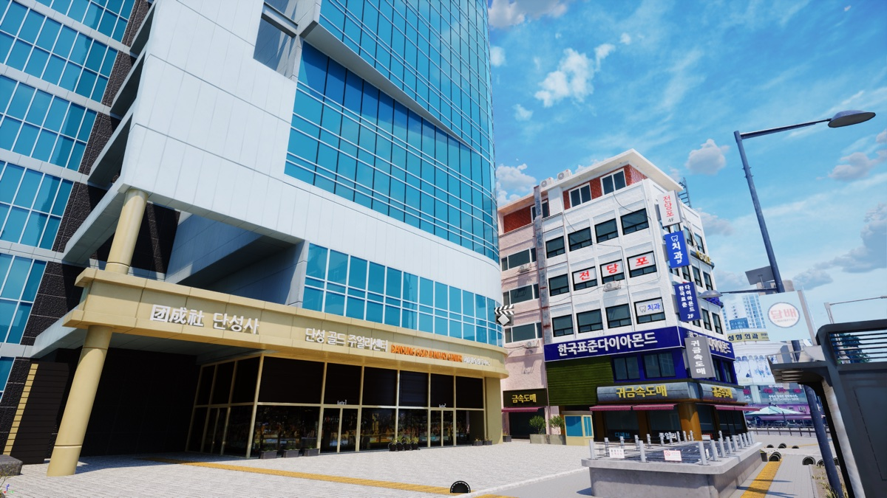
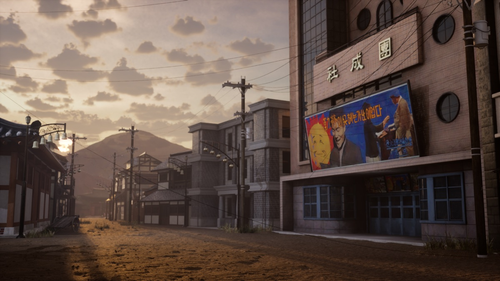
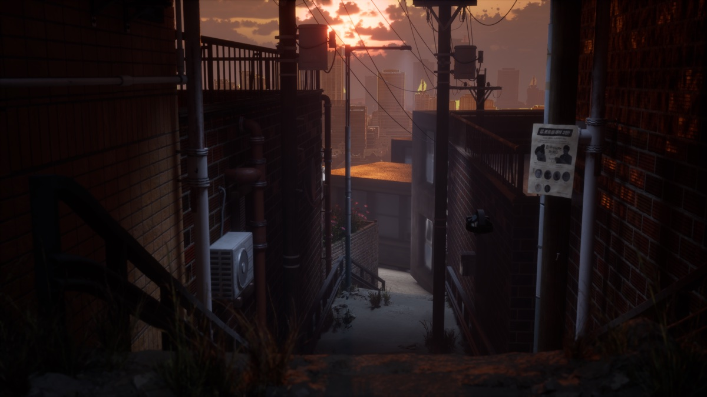
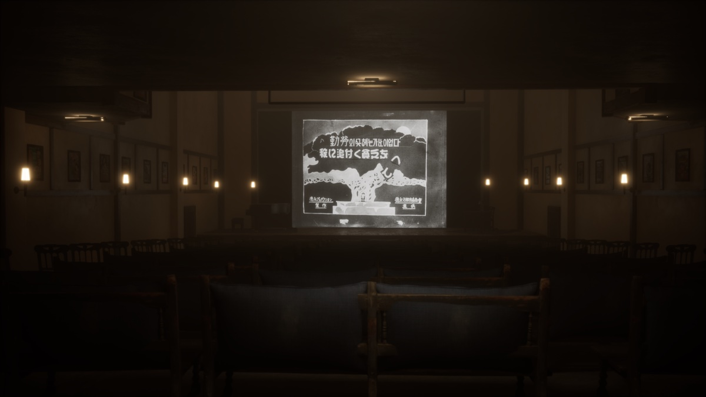

BIFAN 2023 Beyond Reality
Established the work in a film festival setting, positioning cinematic VR as a public screening and immersive media experience.
Case Study · Cinematic VR & AI Screening
A three-venue trajectory connecting VR supervision, AI movie analysis, and immersive exhibition production across BIFAN, MMCA, and Spectrum of Humanity.

This project is best read as a continuing cinematic VR practice: the same production language moved from a film festival context, into a museum exhibition, and then into an international Korea-Canada convergence art program.
The work combines VR supervision, AI movie analysis, and exhibition-oriented technical production, translating cinematic material into immersive environments for different public presentation contexts.
Established the work in a film festival setting, positioning cinematic VR as a public screening and immersive media experience.
Expanded the project into a museum context through Transport to Another World, with VR supervision and AI movie analysis credited in the exhibition record.
Continued the work internationally through Spectrum of Humanity, connecting KOFICE, MMCA, NFB Canada, Cinéma du Musée, and MUTEK contexts.




Supervised the immersive experience layer, including spatial presentation, viewer orientation, and exhibition-readiness.
Supported film AI engineering and analysis workflows for cinematic material in an immersive media context.
Adapted the same creative-technical practice across festival, museum, and international convergence exhibition contexts.
The project gained public validation through BIFAN 2023 Beyond Reality, MMCA's Transport to Another World, and Spectrum of Humanity in Montreal.
The case reflects an ongoing focus on cinematic VR, AI-assisted media analysis, immersive storytelling, and exhibition-scale creative technology.